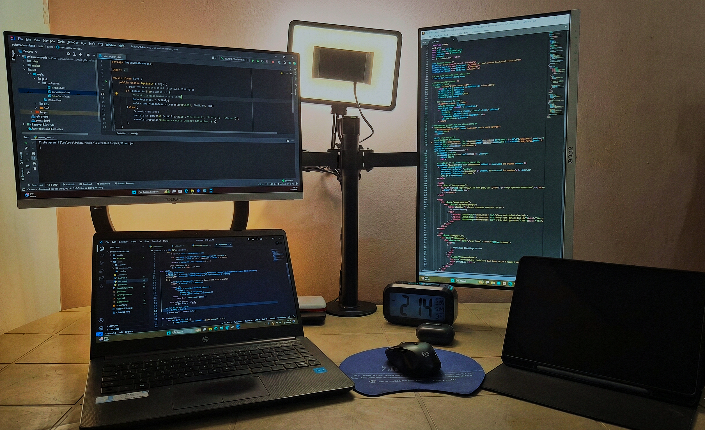
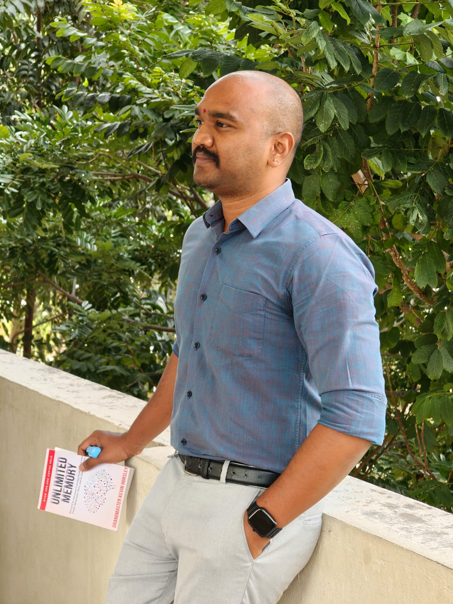
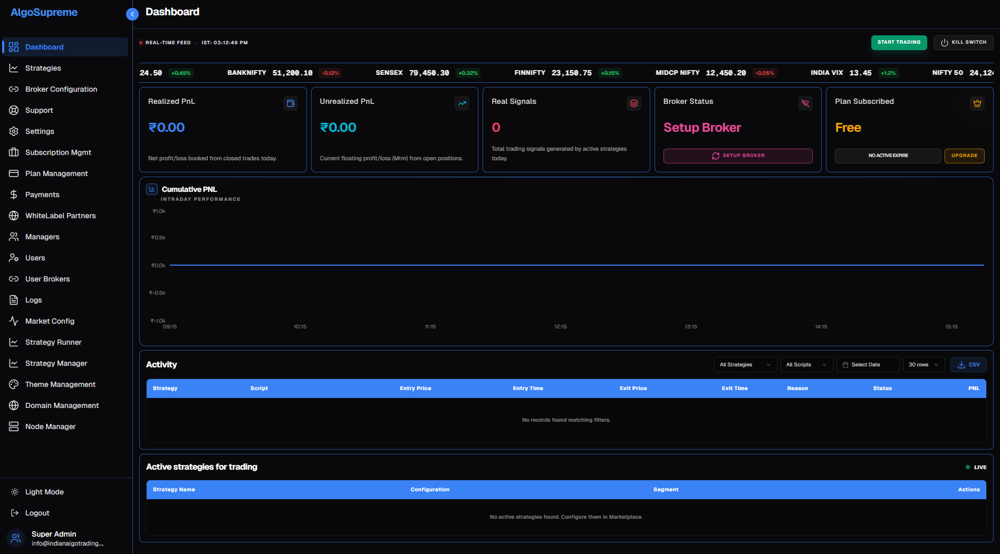
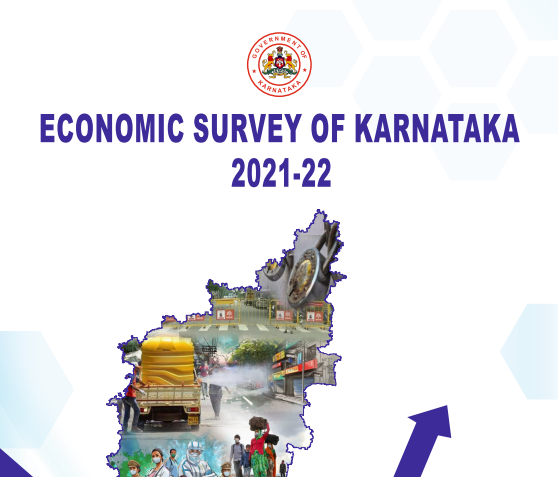

Pavankumar Deshetty

Pavankumar Deshetty
I'm a insight driven Data Analyst, currently working at Kalike - Tata Trusts helping in research and to build a modern, multi thematic, dashboard and automated reports.
In my free time, you can catch me working on AI and Automated analytics, preparing DPR, finding advancements in AI, or exploring best and new ways to solve same old problems of data.
About me
I am an athlete at heart with an entrepreneurial spirit, a knack for root cause identification, and a passion for data analysis. Born in Raichur, Karnataka. I made my move to Bangalore where I learnt more about data analysis and currently work as a Research Associate and Data Analyst at Kalike - Tata Trusts, alongside my many ongoing projects.
I am an atheist and not a blind follower of anything. I believe in questioning, understanding, and finding the truth through evidence and reason.
Outside of work I am an avid motorcyclist, actor, singer and a great cook. I love to travel and explore new places and cultures.

Stats
Sectors
5+Years of experience
8+Projects
15+Core tech stack
Data Analysis
Tools & Domain
Education
M.Sc. (Agri. Econ)
Specialized in Agricultural Economics with a focus on data modelling and market analysis.
B.Sc. (Agri.)
Foundation in Agricultural Sciences.
Experiences: 10 learnings in 8 Years
Research Associate
- Use of Excel, Python and Power BI for cleaning, processing and visualizing data.
- Owned data cleaning, analysis, visualization, and reporting pipelines for program monitoring and evaluations.
- Built dashboards, QA frameworks, and automated workflows to improve reporting accuracy and turnaround time.
- Field research, survey design, and impact documentation (raw data into insights).
- Supported website updates and social media operations to strengthen digital visibility.
Data Analyst
- Use of Excel, SQL and Power BI for cleaning, processing and visualizing data.
- Analyzing consumer behavior, demand in the products and time series analysis and finding optimal time of selling the products.
- Understanding the business and fixing the existing issues in the business focusing on time, process and labour optimization.
- Preparing dashboard and presenting to the leadership teams.
Research Fellow
- Use of Excel, SQL and Power BI for cleaning, processing and visualizing data.
- Worked on quality assessment for evaluation reports and proposals on state government run programs (NFSM, BMTC, ESCOMS and IT).
- As a part of Karnataka Evaluation team, worked on Karnataka Economic Survey 2021-22 for data collection, preparation and reviewing of 20 draft reports.
- Collaborated with various stake holders over 15 state departments for presentation and report modification.
- Processing of raw data on 16 Sustainable Development Goals and Multi-dimensional Poverty Index to extract actionable insights for Karnataka Government.
Senior Research Fellow
- Primary research, leading team and collecting data by primary survey and knowledge sharing.
- Conducted primary research in Hassan and Madikeri on Institutional and Economic Analysis of Human-Wildlife Conflict Mitigation in the Indian Coffee Plantations.
- As a team lead, conducted primary survey, FGDs and In-depth Interviews on HWC and also on the NDDB, data processing, analysis and report preparation.
- Presentation of the results and findings to ICIMOD.
Supply Chain Developer
- I have created a supply chain for vegetables with which even the vegetable venders in Raichur have got profited.
- It was my pro bono initiative to support local farmers and vendors.
Social Media Manager & Data Analyst
- Customer engagement, social media marketing and investment promotion task force in Karnataka.
- Led marketing team for FAFE Expo 2020 India's leading trade expo and exhibition.
- Data scraping and grouping of 18,000 plus MSME and large industries through social medium to support market analysis.
- Knowledge sharing and communicating with the various stakeholders and the participants of the FAFE.
Senior Research Fellow
- Successfully completed 3 projects pertaining to Animal husbandry & alternative incomes, Land utilization, Marketing of agriculture goods.
- As a front-runner with genuine devotion and with additional motivation, I was able to finish my field work on data collection and projects report writing work on schedule.
- The research investigated and examined issues relating to farming, marketing, extension of knowledge, technology adoption, and efficient utilization of resources.
Field Executive
- Educating farmers about the use of the internet and technology adoption in farming, value addition and market linkage.
- During which, a group of farmers was formed to share technology and machinery for reducing costs in farming.
Teaching Experience
- Established a coaching center for educating students on Agriculture practical exams.
- Guided more than 300 PUC science passed students.
- Resulting in securing 20 seats by scoring highest in practical exams.
Rural Ag. Work Experience
- Staying in rural village, observing the issues and identification of hidden problems, and communicating to farmers as well as subject expert specialist.
- Suggested watermelon seed producing farmers to sell watermelon juice after extracting seeds, which yielded him earning 2,500 extra from his 1-acre land.
My work



Get in touch
Have a project for me? I'd love to hear from you.